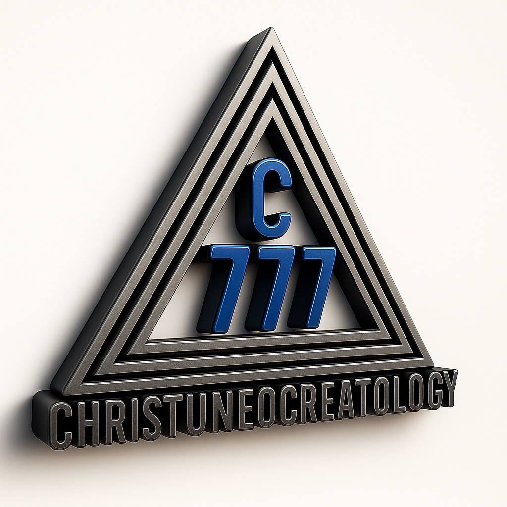

CHRISTUNEOCREATOLOGY™ is the foundational system of thought, philosophy, spirituality, science, technology, education, and civilizational development established by Angel Naitbj. It is centered on the principles of divine wisdom, alignment, creation, transformation, and structured understanding of reality.
It teaches that existence operates through systems and principles that are either in alignment or misalignment. Alignment leads to order, growth, balance, and constructive manifestation, while misalignment leads to confusion, disorder, instability, and destructive outcomes. From this perspective, Christuneocreatology presents a framework for understanding how individuals, systems, institutions, and civilization function.
At its core, Christuneocreatology seeks to bridge the gap between spirituality, knowledge, and practical life application. It does not limit itself to abstract thought, but extends into how people think, learn, build, communicate, govern, create, and develop systems in the real world.
It emphasizes that true knowledge is not only about information, but about transformation — the ability of knowledge to produce understanding, alignment, and constructive action. Learning is therefore viewed as a process of becoming, not just acquiring information.
Christuneocreatology also teaches that science, technology, engineering, education, governance, media, and enterprise are not separate realities, but interconnected systems that shape civilization. When these systems operate in alignment, they produce stability, advancement, and sustainable development. When they are misaligned, they produce instability and dysfunction.
The framework further emphasizes that human life and civilization are shaped by systems of thought, design, and application. Therefore, individuals are encouraged to think critically, act constructively, and develop solutions that contribute to the advancement of society.
Ultimately, Christuneocreatology presents a unified approach to understanding life and civilization, focusing on alignment, structure, wisdom, and transformation. It aims to guide individuals toward constructive thinking and responsible application of knowledge in all areas of life.
Its branches are as follows:
CHRISTUNEOCREATOCRACY™ is the governance and civilizational framework derived from the principles of the C777® Christuneocreatology System, as taught by Angel Naitbj. It represents a structured system of leadership, administration, and civilization built upon Christic alignment, wisdom, truth, constructive order, and transformative governance.
The concept can be understood through its structure: Christ represents Christic order and alignment with original intent; Neo/Uneo represents renewal and transformation; Creato represents creation and constructive manifestation; while Cracy (Kratos) represents governance, rule, administration, and operational authority. Together, Christuneocreatocracy refers to a system of governance and civilization based on aligned systems, constructive leadership, and sustainable advancement.
The foundational principle of Christuneocreatocracy teaches that: alignment produces Christic order (new creation), while misalignment produces Satanic order (old creation). This principle is applied across leadership, institutions, education, economics, science, technology, law, and societal systems. Governance is therefore viewed not merely as control, but as the establishment of alignment, preservation of order, and advancement of constructive civilization.
Christuneocreatocracy seeks to build a civilization where systems function in alignment, leadership operates through wisdom and structure, knowledge is applied constructively, and society advances sustainably. It seeks to replace corruption with structure, confusion with clarity, exploitation with responsible administration, and instability with sustainable systems.
Within this framework, Christic Governance (New Creation) represents governance built on truth, wisdom, alignment, constructive systems, justice, and sustainable development. It produces order, stability, growth, and human advancement. In contrast, Satanic Governance (Old Creation) represents governance operating through corruption, manipulation, misalignment, and destructive systems, resulting in oppression, confusion, instability, and societal decline.
Leadership in Christuneocreatocracy is viewed as system stewardship rather than domination. A leader is expected to understand systems, solve problems, establish order, build sustainable structures, and guide civilization constructively. Leadership is therefore measured by functionality, alignment, and long-term impact rather than popularity or authority alone.
Christuneocreatocracy embraces science, engineering, artificial intelligence, and technology, but teaches that they must operate within Christic alignment. Technology without alignment can produce manipulation, surveillance abuse, and destructive systems, while aligned technology produces intelligent infrastructure, constructive civilization, and sustainable human advancement.
Education within Christuneocreatocracy is viewed as the development of capacity, critical thinking, innovation, systems understanding, and intelligent application of knowledge. It rejects blind memorization, passive learning, and outdated educational structures, emphasizing instead problem-solving, intelligent utilization of knowledge, and civilization advancement.
Christuneocreatocracy also teaches that economics and wealth must function within constructive alignment. Wealth should serve sustainable development and civilization advancement rather than exploitation or corruption. Thus, Christic economic systems build civilization, while misaligned systems destabilize society.
Individuals within Christuneocreatocracy are expected to become Christuneocreators — aligned practitioners and builders of constructive civilization. Every profession becomes part of civilization development, including Christuneocreative Engineers, Scientists, Doctors, Educators, Technologists, and System Builders.
The ultimate objective of Christuneocreatocracy is the advancement of a Christuneocreative Civilization — a civilization where systems are aligned, leadership is structured, technology is constructive, education is transformative, knowledge is intelligently applied, and human life advances sustainably through wisdom, structure, and constructive governance.
Christuneocreatogogy™, according to the teachings of Angel Naitbj, is the educational and developmental dimension of the C777® Christuneocreatology System. It is a structured framework for training, guidance, transformation, and civilization-oriented learning designed to produce Christuneocreative individuals capable of constructive manifestation and societal advancement.
The word Christuneocreatogogy is conceptually understood as: Christ representing Christic alignment and original intent, Neo/Uneo representing renewal and transformation, Creato representing creation and constructive formation, and Gogy/Agogy representing guidance, training, and developmental education. Thus, Christuneocreatogogy refers to:
“The structured system of training, education, and developmental guidance for producing Christuneocreative individuals and civilization.”
The foundation of Christuneocreatogogy teaches that education is not merely the transfer of information, but the transformation of the individual into aligned and functional expression. It emphasizes that true education must:
• Develop thinking and reasoning
• Build capacity and discipline
• Refine character and understanding
• Produce practical and constructive manifestation
• Advance innovation and intelligent application
Christuneocreatogogy seeks to move education beyond memorization, passive learning, and certificate dependency toward critical thinking, systems understanding, intelligent application, and transformational development. It teaches that information alone is insufficient and that true learning occurs when knowledge becomes understanding, application, and manifestation.
Within this framework, Christic Education (New Creation) produces critical thinking, creativity, alignment, constructive problem-solving, and sustainable development. It develops individuals capable of building systems, advancing civilization, and applying knowledge wisely.
In contrast, Satanic Education (Old Creation) is described as education operating through blind memorization, dependency, intellectual stagnation, and repetition without understanding. It prioritizes cramming and outdated educational structures without producing real functional capacity.
Christuneocreatogogy teaches that the role of a teacher is not merely to transmit information, but to guide transformation and alignment. Teachers are expected to help students understand systems, develop reasoning, apply knowledge, and become functional contributors to civilization.
Likewise, students are expected to become active thinkers, constructive learners, problem solvers, and developers of systems and solutions. Learning is viewed as:
“A process of becoming, not merely passing examinations.”
Christuneocreatogogy also embraces science, engineering, artificial intelligence, and technology as tools for advancing intelligent learning and civilization. It teaches that modern education should train students to use machines intelligently, develop critical reasoning, and focus on what machines cannot replace, rather than relying on excessive memorization and outdated systems.
According to this framework, education forms the foundation of civilization. The type of education adopted by a society determines the quality of leadership, the strength of systems, technological advancement, and the direction of civilization itself. Therefore:
• Aligned education produces Christic civilization (New Creation)
• Misaligned education produces Satanic civilization (Old Creation)
Ultimately, Christuneocreatogogy is presented as a comprehensive educational and developmental system designed to produce Christuneocreative individuals capable of building aligned systems, advancing constructive civilization, and transforming society through wisdom, understanding, intelligent application, and sustainable manifestation.
CHRISTUNEOCREATOPRENEURSHIP™ is the entrepreneurial and enterprise dimension of the C777® Christuneocreatology System developed by Angel Naitbj. It represents a structured framework for building aligned enterprises, intelligent systems, sustainable innovations, and constructive economic structures aimed at advancing humanity and civilization.
According to the teachings of Angel Naitbj, the word Christuneocreatopreneurship can be conceptually understood as:
Christ → Christic alignment, wisdom, original intent, constructive order
Uneo / Neo → renewal, transformation, new creation
Creato → creation, constructive manifestation, system formation
Preneurship / Entrepreneurship → innovation, enterprise creation, opportunity development, and value production
Thus, Christuneocreatopreneurship refers to:
“The aligned and constructive practice of building enterprises, systems, innovations, and sustainable economic structures for human and civilizational advancement.”
The foundation of Christuneocreatopreneurship teaches that enterprise is not merely for profit, but for constructive manifestation, problem-solving, and civilization advancement. It emphasizes that entrepreneurship should:
• solve real-world problems
• create meaningful value
• develop sustainable systems
• improve human life
• build intelligent structures
• advance civilization constructively
The purpose of Christuneocreatopreneurship is to produce:
• aligned entrepreneurs
• innovators and system builders
• constructive wealth creators
• solution developers
• transformational enterprise leaders
It seeks to transform entrepreneurship from:
• survival mentality
• exploitation
• corruption
• short-term gain
into:
• intelligent value creation
• sustainable development
• ethical innovation
• civilization building
• long-term constructive impact
Within Christuneocreatopreneurship, two operational models of entrepreneurship are identified:
Christic Entrepreneurship (New Creation) represents entrepreneurship operating in:
• alignment
• wisdom
• structure
• sustainability
• constructive impact
• ethical innovation
It produces:
• stable systems
• beneficial solutions
• intelligent enterprises
• long-term advancement
• societal development
Satanic Entrepreneurship (Old Creation) represents entrepreneurship operating in:
• greed
• exploitation
• corruption
• destructive gain
• manipulative systems
It produces:
• unstable wealth
• harmful systems
• societal damage
• economic instability
• destructive manifestations
Christuneocreatopreneurship acknowledges that:
• wealth follows principles
• enterprise requires systems
• value creation is essential
However, it teaches that wealth must function within:
“Christic alignment (new creation).”
This means wealth should:
• build and not destroy
• empower and not exploit
• sustain and not corrupt
• advance civilization constructively
A Christuneocreatopreneur is described as:
“A builder of aligned systems, enterprises, and innovations for constructive advancement.”
Such a person is expected to:
• identify problems
• design intelligent solutions
• build sustainable systems
• create value
• develop scalable structures
• transform society positively
The focus is therefore not merely making money, but building systems that positively transform lives, organizations, economies, and civilization itself.
Christuneocreatopreneurship strongly emphasizes:
• systems engineering
• scalability
• integration
• intelligent infrastructure
• structured operational models
Enterprises are encouraged to function through:
• intelligent systems
• sustainable processes
• structured operations
• scalable frameworks
rather than depending entirely on manual effort, unstable structures, or personality-based leadership.
Technology and Artificial Intelligence are viewed as important tools for:
• solving problems
• increasing efficiency
• scaling solutions
• improving human life
• advancing constructive civilization
Christuneocreatopreneurship therefore encourages the use of AI, engineering, science, and technology when they operate within:
“Christic alignment (new creation).”
Technology should:
• assist humanity constructively
• improve systems intelligently
• expand human capability
• advance sustainable civilization
and not:
• manipulate people
• exploit society
• destabilize civilization
• produce destructive systems
Christuneocreatopreneurship also teaches that education should not merely prepare individuals for jobs, but should produce:
• creators
• innovators
• problem solvers
• enterprise builders
• systems thinkers
It emphasizes:
• critical thinking
• adaptability
• intelligent utilization of systems
• practical application of knowledge
• constructive innovation
According to this framework, entrepreneurship directly influences civilization. Aligned enterprises produce:
• employment
• innovation
• societal advancement
• economic stability
• constructive development
while misaligned enterprises produce:
• exploitation
• corruption
• instability
• destructive systems
• civilizational decline
Therefore:
• Christic enterprise builds civilization (New Creation)
• Satanic enterprise weakens civilization (Old Creation)
Ultimately, Christuneocreatopreneurship is presented as a comprehensive entrepreneurial and economic framework designed to produce Christuneocreative entrepreneurs capable of building intelligent, structured, sustainable, and transformative systems that positively advance humanity and civilization.
CHRISTUNEOCREATOMEDIA™ is the media, communication, and information dimension of the C777® Christuneocreatology System developed by Angel Naitbj. It represents the aligned and constructive use of media, communication systems, digital technology, information platforms, and creative expression for transformation, education, enlightenment, and civilizational advancement.
According to the teachings of Angel Naitbj, Christuneocreatomedia is not merely entertainment or information distribution, but a civilization-shaping communication framework designed to spread truth, wisdom, understanding, and constructive manifestation.
The word Christuneocreatomedia can be conceptually understood as:
Christ → Christic alignment, truth, wisdom, constructive order
Uneo / Neo → renewal, transformation, new creation
Creato → creation, constructive manifestation, system formation
Media → communication systems, information distribution, digital and creative expression
Thus, Christuneocreatomedia refers to:
“The aligned and constructive use of media, communication, information, and creative technology for transformation, education, and civilization advancement.”
The foundation of Christuneocreatomedia teaches that media is not neutral. Media shapes minds, influences societies, directs culture, and affects civilization itself. According to this framework:
• repeated information shapes consciousness
• communication influences civilization
• media directs perception and societal values
Therefore, media must operate within:
“Christic alignment (New Creation).”
Christuneocreatomedia teaches that media should not merely entertain or distribute information, but should:
• educate intelligently
• spread wisdom and truth
• transform societies constructively
• develop critical thinking
• advance civilization positively
The purpose of Christuneocreatomedia is to use communication systems and digital platforms for:
• constructive communication
• intelligent education
• transformative information dissemination
• civilization development
• enlightenment and awareness
• meaningful societal impact
It seeks to move media away from:
• manipulation
• misinformation
• destructive influence
• empty entertainment
• societal corruption
and toward:
• truth
• wisdom
• creativity
• intelligent communication
• constructive influence
• transformational impact
Within Christuneocreatomedia, two communication systems are identified:
Christic Media (New Creation) represents media operating in:
• truth
• alignment
• constructive communication
• transformational influence
• responsible dissemination
It produces:
• enlightenment
• intelligent awareness
• educational advancement
• positive cultural development
• constructive civilization
Satanic Media (Old Creation) represents media operating in:
• manipulation
• distortion
• confusion
• destructive influence
• misinformation
It produces:
• fear
• moral decay
• mental corruption
• societal instability
• civilizational degeneration
Christuneocreatomedia teaches that what people consistently watch, hear, read, and consume eventually shapes:
• their thinking
• behavior
• values
• cultural direction
• societal systems
Therefore:
• aligned media advances civilization
• misaligned media degrades civilization
Christuneocreatomedia includes multiple forms of communication and media systems such as:
• digital media
• educational content
• films and documentaries
• podcasts
• social media communication
• AI-generated media
• publishing and broadcasting
• creative technology platforms
The objective is not simply content creation, but:
“Constructive influence and intelligent transformation.”
Christuneocreatomedia embraces modern technologies including:
• Artificial Intelligence (AI)
• digital systems
• intelligent communication tools
• advanced broadcasting technologies
• information infrastructures
These technologies are viewed as instruments for:
• education
• global connectivity
• knowledge dissemination
• problem-solving
• civilization advancement
However, technology and AI-driven media must remain aligned because they can produce either:
• Christic order (New Creation)
• or Satanic order (Old Creation)
depending on:
• intent
• structure
• direction
• application
A Christuneocreatomedian is described as:
“A communicator, creator, or media practitioner who uses media systems constructively for transformation and civilization advancement.”
This includes:
• writers
• filmmakers
• educators
• broadcasters
• digital creators
• AI media developers
• communication strategists
The focus is not popularity alone, but:
• meaningful impact
• aligned influence
• intelligent communication
• constructive transformation
Christuneocreatomedia also promotes:
• critical thinking
• intelligent communication
• educational innovation
• practical learning systems
• responsible information dissemination
It opposes:
• shallow information consumption
• blind emotional manipulation
• destructive propaganda
• dependency on misinformation
Ultimately, Christuneocreatomedia is presented as a comprehensive media and communication framework designed to use communication systems, digital technology, creative platforms, and intelligent information structures as tools for enlightenment, education, transformation, and constructive civilizational advancement.